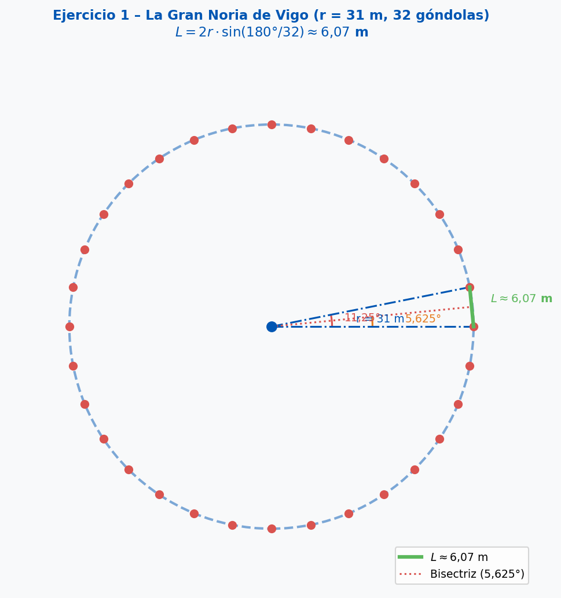
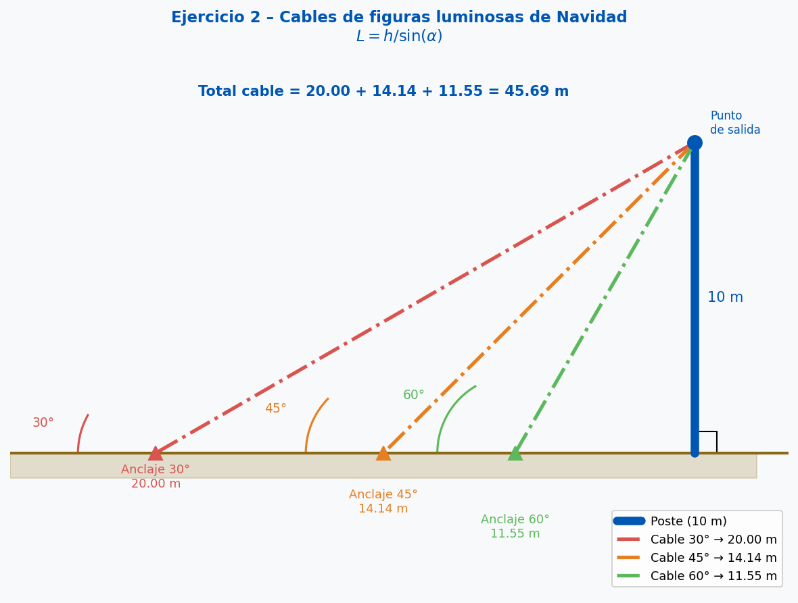
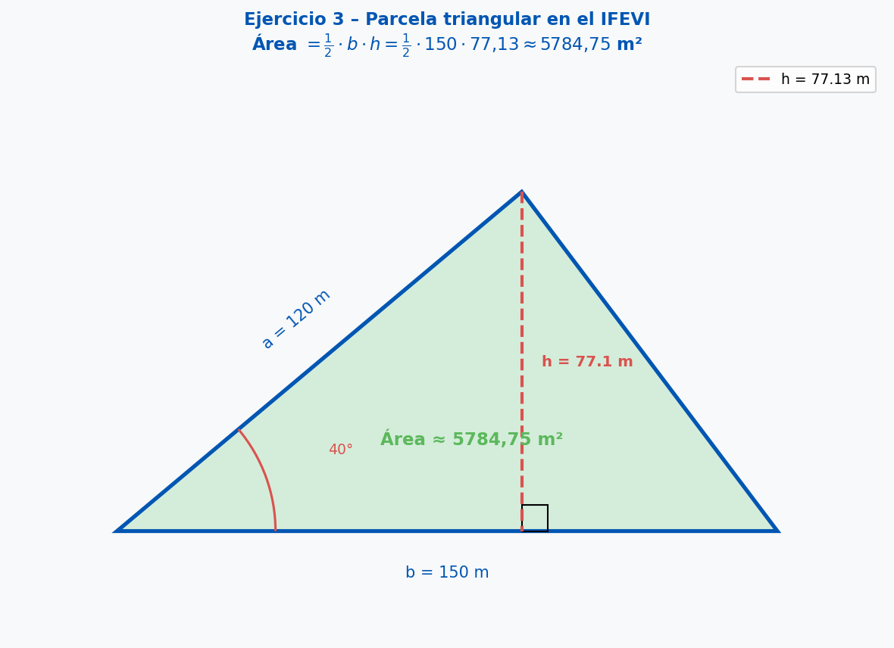
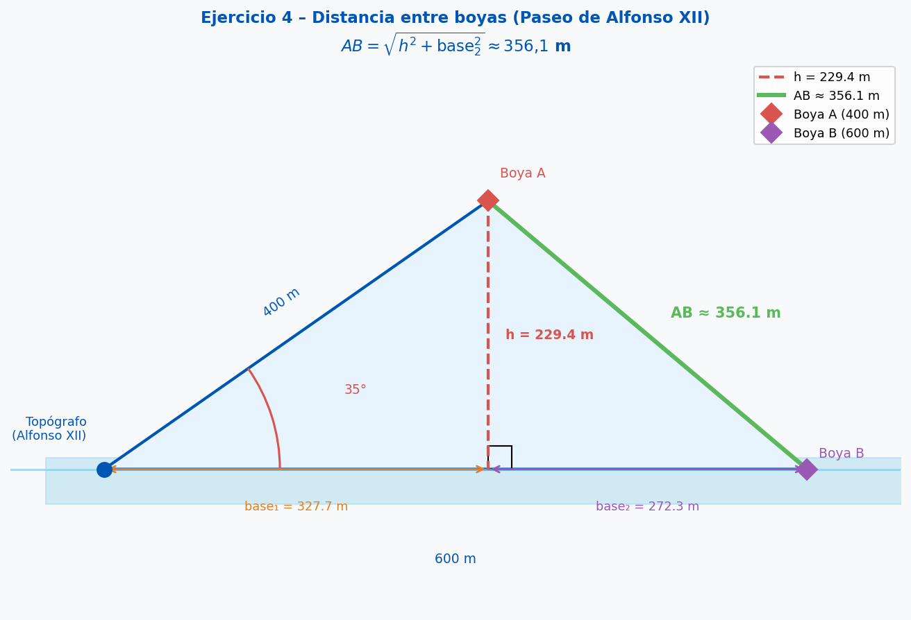

Apuntes Teóricos
Conocimientos previos necesarios: Áreas de polígonos regulares, trigonometría general,
resolución de triángulos no rectángulos (mediante descomposición en rectángulos).
1. Lado de un polígono regular inscrito en una circunferencia
Un polígono regular de \(n\) lados inscrito en un círculo de radio \(r\) se divide en
\(n\) triángulos isósceles con ángulo central \(\frac{360°}{n}\).
Cada triángulo isósceles se puede dividir en dos triángulos rectángulos con
ángulo en el centro \(\frac{180°}{n}\):
$$\sin\!\left(\frac{180°}{n}\right) = \frac{L/2}{r} \implies L = 2r \cdot \sin\!\left(\frac{180°}{n}\right)$$
2. Área de un triángulo con dos lados y el ángulo comprendido
Si conocemos dos lados \(a\) y \(b\) y el ángulo \(\gamma\) entre ellos,
trazamos la altura \(h = a \cdot \sin(\gamma)\) sobre el lado \(b\):
$$\text{Área} = \frac{1}{2} \cdot b \cdot h = \frac{1}{2} \cdot b \cdot a \cdot \sin(\gamma)$$
3. Distancia entre dos puntos con ángulo (Ley del Coseno)
Para un triángulo con lados \(a\), \(b\) y ángulo \(\gamma\) entre ellos:
$$c^2 = a^2 + b^2 - 2ab\cos(\gamma)$$
También resoluble descomponiendo en triángulos rectángulos mediante la altura
\(h = a \cdot \sin(\gamma)\) y las proyecciones sobre el lado \(b\).
Bloque Práctico: Luces de Navidad y Grandes Estructuras
Modelado
Ejercicio 1 – La Gran Noria de Vigo (calle Areal)
La noria instalada en la calle Areal es un polígono regular de 32 lados (góndolas).
Si el radio de la noria es de 31 metros, calcula la distancia lineal
entre dos góndolas consecutivas (el lado del polígono).

Resolución paso a paso:
Paso 1 – Ángulo central.
32 triángulos isósceles → ángulo central = \(360° / 32 = 11{,}25°\).
Paso 2 – Triángulo rectángulo mitad.
Dividimos cada isósceles por la bisectriz → triángulo rectángulo con ángulo \(11{,}25° / 2 = 5{,}625°\),
hipotenusa \(r = 31\text{ m}\) y cateto opuesto \(L/2\).
Paso 3 – Aplicar seno.
$$\sin(5{,}625°) = \frac{L/2}{31} \implies \frac{L}{2} = 31 \cdot \sin(5{,}625°) = 31 \cdot 0{,}0980 = 3{,}038 \text{ m}$$
$$L = 2 \cdot 3{,}038 \approx \mathbf{6{,}07 \text{ m}}$$
⚠️ Error común: Usar el ángulo central completo (11,25°) en un triángulo que NO es
rectángulo. Hay que dividirlo a la mitad (5,625°) para trabajar con el triángulo rectángulo.
Práctica guiada
Ejercicio 2 – Cables de las figuras luminosas de Navidad
Para instalar una figura luminosa de Navidad, se necesitan tres cables que parten del
mismo punto en un poste a 10 metros de altura y se anclan al suelo
formando ángulos de 30°, 45° y 60° con el suelo.
Calcula la longitud total de cable necesaria.

Resolución:
Cable 1 (ángulo 30°):
$$\sin(30°) = \frac{10}{L_1} \implies L_1 = \frac{10}{0{,}5} = \mathbf{20 \text{ m}}$$
Cable 2 (ángulo 45°):
$$\sin(45°) = \frac{10}{L_2} \implies L_2 = \frac{10}{0{,}707} \approx \mathbf{14{,}14 \text{ m}}$$
Cable 3 (ángulo 60°):
$$\sin(60°) = \frac{10}{L_3} \implies L_3 = \frac{10}{0{,}866} \approx \mathbf{11{,}55 \text{ m}}$$
Total:
$$L_{\text{total}} = 20 + 14{,}14 + 11{,}55 \approx \mathbf{45{,}69 \text{ m}}$$
Práctica guiada
Ejercicio 3 – Parcela triangular en el IFEVI
Calcula el área de una parcela triangular en el IFEVI (Instituto Feiral de Vigo)
cuyos lados miden 120 m y 150 m,
y el ángulo comprendido entre ellos es de 40°.

Resolución:
Trazamos la altura sobre el lado de 150 m.
La altura desde el vértice opuesto:
$$h = 120 \cdot \sin(40°) = 120 \cdot 0{,}643 = 77{,}13 \text{ m}$$
Área del triángulo:
$$\text{Área} = \frac{1}{2} \cdot \text{base} \cdot h = \frac{150 \cdot 77{,}13}{2} \approx \mathbf{5784{,}75 \text{ m}^2}$$
Práctica independiente
Desafío
Ejercicio 4 – Distancia entre boyas (Paseo de Alfonso XII)
Un topógrafo en el Paseo de Alfonso XII quiere medir la distancia entre dos boyas en la ría.
Mide la distancia desde su posición a la Boya A (400 m) y a la
Boya B (600 m). El ángulo entre las dos visuales es de 35°.
¿Qué distancia separa las boyas?

Resolución (descomposición en triángulos rectángulos):
Altura del triángulo principal (perpendicular desde A al lado OB):
$$h = 400 \cdot \sin(35°) = 400 \cdot 0{,}574 = 229{,}4 \text{ m}$$
Proyección de OA sobre OB:
$$\text{base}_1 = 400 \cdot \cos(35°) = 400 \cdot 0{,}819 = 327{,}6 \text{ m}$$
Segmento restante hasta B:
$$\text{base}_2 = 600 - 327{,}6 = 272{,}4 \text{ m}$$
Distancia AB (Pitágoras en el triángulo rectángulo formado):
$$AB = \sqrt{229{,}4^2 + 272{,}4^2} = \sqrt{52624 + 74202} = \sqrt{126826} \approx \mathbf{356{,}1 \text{ m}}$$